Población, hogares y viviendas en los 91 radios censales del partido
Hasta este trabajo, para Giles había geometría de los radios de 2022 y datos por radio de 2010, pero ninguna tabla pública con datos de 2022 por radio. Las dos cosas no se pueden cruzar sin más, porque el INDEC rehízo la división: el partido pasó de 77 a 91 radios.
Las fuentes con datos de 2022 por radio son tres. La capa de radios 2022 de Datos Abiertos de la Provincia se descargó y se revisó: trae sólo geometría y códigos. Los GeoPackages de la Universidad Nacional de Córdoba (Boccolini, 2026, licencia CC BY 4.0) traen población, viviendas, viviendas vacías por motivo y grandes grupos de edad para todo el país, pero sólo para los radios con más de un habitante por hectárea: en Giles cubren 39 de los 91 radios (22.934 habitantes, el 86,9 % de la población en viviendas particulares) y dejan afuera todo el campo. La fuente completa es la base Redatam del INDEC, que permite procesar el cuestionario entero por radio.
Se consultó el servidor Redatam del INDEC (Censo 2022, base de viviendas particulares) seleccionando el departamento 06728 y pidiendo la salida por radio. Se procesaron 71 variables: 10 de vivienda, 29 de hogar y 32 de persona, más un cruce de localidad por grandes grupos de edad. Cada tabla trae los 91 radios y un resumen del partido.
Validación. Los resúmenes coinciden con los cuadros publicados por el INDEC: 10.988 viviendas particulares, 9.304 con personas presentes, 1.684 sin personas, 9.387 hogares y 26.399 personas en viviendas particulares (las 111 restantes hasta los 26.510 habitantes viven en viviendas colectivas o en situación de calle, que la base por radio no incluye). En los 39 radios que comparten con la base de la UNC, población, viviendas y viviendas vacías coinciden radio por radio, sin una sola diferencia.
Límites. Los porcentajes de radios con muy pocos habitantes son inestables: en el campo hay radios con 3 a 20 personas, donde una sola casa cambia el valor en decenas de puntos. Por eso, el índice de envejecimiento sólo se mapea en radios con 60 habitantes o más, y las lecturas se apoyan en los agregados por ámbito y en los estadísticos espaciales, no en el valor aislado de un radio rural.
Cada radio pertenece a una sola localidad. Eso permite, por primera vez con datos del propio censo, repartir la población entre la ciudad cabecera (30 radios), los pueblos (11 radios en siete localidades) y el campo (50 radios de población rural dispersa).
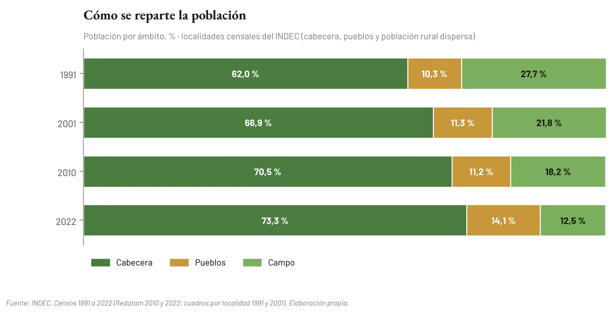
Figura 1. Población en viviendas particulares por ámbito, 1991–2022.
La cabecera reúne 19.362 personas (73,3 %), los pueblos 3.727 (14,1 %) y el campo 3.310 (12,5 %). La serie de las localidades censales del INDEC muestra un desplazamiento sostenido: en 1991 el campo reunía el 27,7 % de la población, en 2001 el 21,8 %, en 2010 el 18,2 % y en 2022 el 12,5 %. La cabecera pasó del 62,0 % al 73,3 % y los pueblos, estables alrededor del 11 % entre 1991 y 2010, subieron al 14,1 % en 2022.
Corrección: una versión anterior de este informe y de las webs del Plan citaba para 2010 un reparto de 77,6 / 10,3 / 12,0 %. El Redatam del INDEC da, por localidad, 70,5 / 11,2 / 18,2 %, que es el valor que se usa aquí.
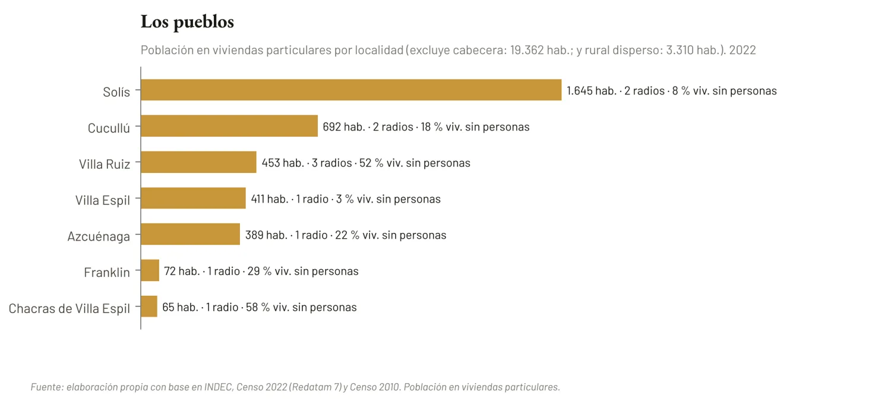
Figura 2. Población por localidad, excluidas la cabecera y la población rural dispersa.
Tabla 1. Indicadores por localidad. 2022.
| Localidad | Radios | Población | Hogares | Viviendas | % sin personas | Índ. env. | % cloaca | % gas red | % alquila | % NBI |
|---|---|---|---|---|---|---|---|---|---|---|
| Cabecera | 30 | 19.362 | 6.983 | 7.613 | 9,0 | 55 | 58,3 | 64,5 | 23,1 | 3,9 |
| Solís | 2 | 1.645 | 567 | 610 | 8,4 | 40 | 1,1 | 0,4 | 16,0 | 6,9 |
| Cucullú | 2 | 692 | 216 | 261 | 18,0 | 40 | 9,7 | 7,4 | 10,6 | 6,0 |
| Villa Ruiz | 3 | 453 | 162 | 341 | 52,5 | 46 | 1,2 | 1,9 | 9,9 | 7,4 |
| Villa Espil | 1 | 411 | 133 | 135 | 3,0 | 35 | 26,3 | 20,3 | 16,5 | 9,0 |
| Azcuénaga | 1 | 389 | 140 | 178 | 22,5 | 52 | 0,0 | 0,0 | 15,0 | 5,0 |
| Franklin | 1 | 72 | 27 | 38 | 28,9 | 35 | 0,0 | 0,0 | 7,4 | 3,7 |
| Chacras de Villa Espil | 1 | 65 | 23 | 55 | 58,2 | 38 | 4,3 | 8,7 | 4,3 | 0,0 |
| Rural disperso | 50 | 3.310 | 1.136 | 1.757 | 36,0 | 42 | 1,1 | 1,9 | 6,1 | 5,6 |
Fuente: elaboración propia con base en INDEC, Censo Nacional de Población, Hogares y Viviendas 2022, procesado con Redatam 7. Índice de envejecimiento: 65 y más por cada 100 de 0 a 14.
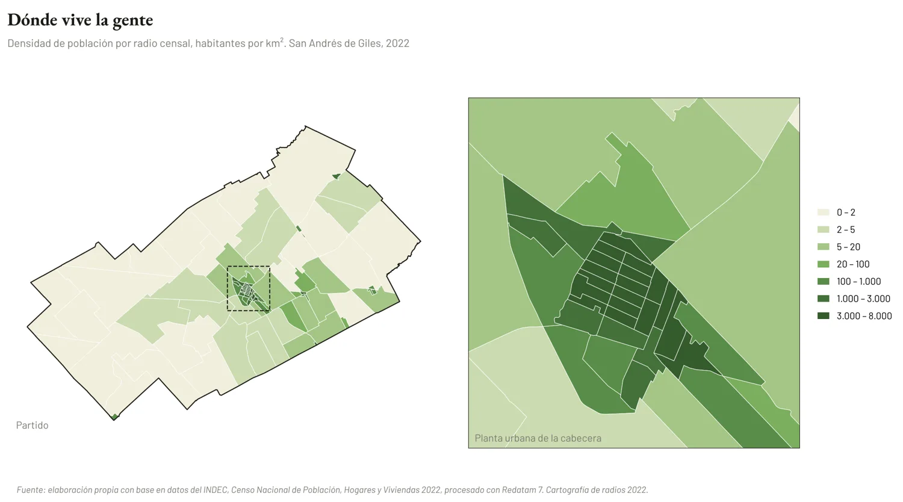
Figura 3. Densidad de población por radio censal. A la derecha, la planta urbana de la cabecera.
La mitad de los radios tiene 115 habitantes o menos, y el más poblado, 1.530 (el núcleo de Solís). La densidad va de menos de 1 hab/km² en el campo a más de 6.000 en el centro de la cabecera (radio 067281709: 6.257 hab/km²). La curva de concentración resume esa distancia: el 86,0 % de la población vive en el 1 % del territorio, con un Gini espacial de 0,944 y un índice de Hoover de 0,871: más de cuatro de cada cinco habitantes deberían cambiar de radio para que la densidad fuera pareja.
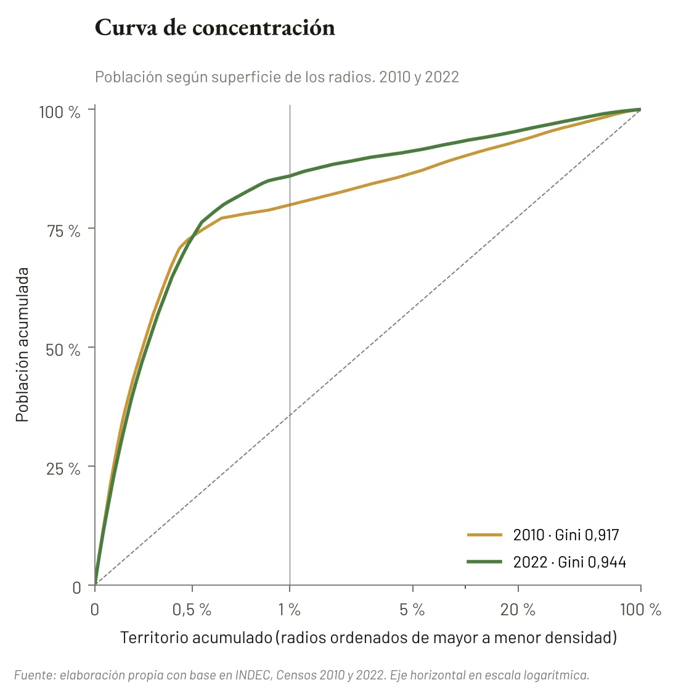
Figura 4. Curva de concentración de la población según superficie, radios 2010 y 2022.
En 2010 los mismos indicadores daban 79,2 % de la población en el 1 % del territorio y un Gini de 0,917. La concentración parece haber aumentado, pero parte de ese aumento es un efecto de la grilla: con 91 radios en lugar de 77, los radios urbanos son más chicos y la curva se empina aunque nadie se haya mudado. Es el problema de la unidad espacial modificable, y obliga a no leer la diferencia como una tendencia. Lo que sí es robusto es la forma: un núcleo compacto rodeado de un territorio casi vacío, con autocorrelación espacial muy alta (I de Moran = 0,73, p = 0,001; en 2010, 0,74).
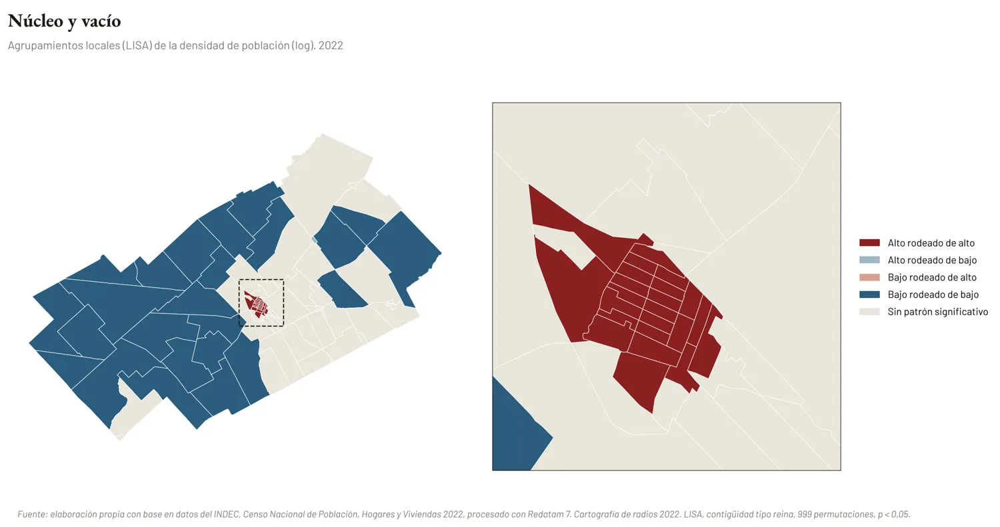
Figura 5. Agrupamientos locales de la densidad (LISA).
El 15,3 % de las viviendas particulares del partido no tenía personas presentes el día del censo. Con los datos por radio, ese promedio se descompone en tres realidades muy distintas: 9,0 % en la cabecera, 22,5 % en los pueblos y 36,0 % en el campo.
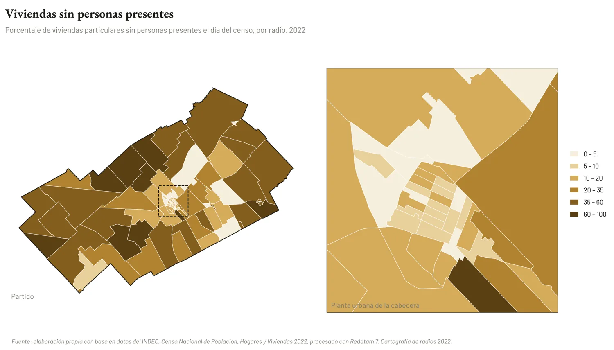
Figura 6. Porcentaje de viviendas sin personas presentes por radio censal.
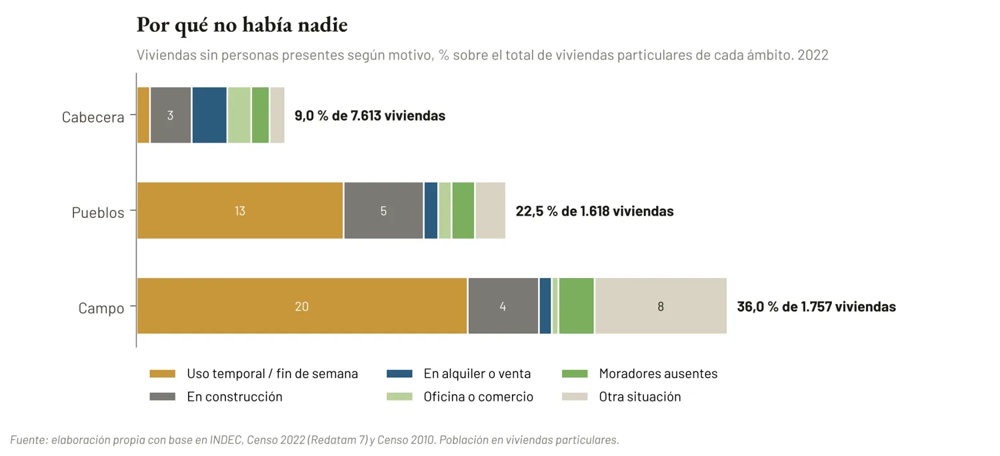
Figura 7. Viviendas sin personas presentes según motivo y ámbito.
Los motivos dibujan la diferencia. En la cabecera, la vivienda sin gente es sobre todo vivienda en tránsito: en construcción (194), en alquiler o venta (166) o usada como oficina o comercio (110); el uso temporal apenas suma 60. En los pueblos y en el campo domina la vivienda de fin de semana: 204 y 354 viviendas de uso temporal, respectivamente. De las 618 viviendas de uso temporal del partido, el 57 % está en radios rurales y el 33 % en los pueblos.
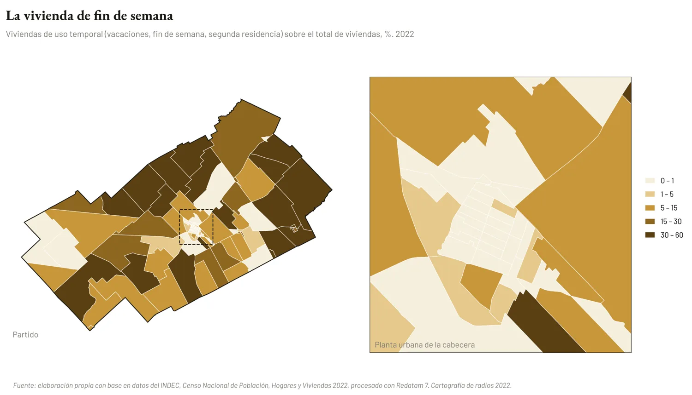
Figura 8. Viviendas de uso temporal sobre el total de viviendas, por radio.
Villa Ruiz es el caso extremo: 179 de sus 341 viviendas (52 %) estaban sin personas, 98 de ellas de uso temporal. Chacras de Villa Espil llega al 58 %. En el otro extremo, Villa Espil (3 %) y Solís (8 %) se comportan como pueblos de residencia permanente. El patrón está espacialmente agrupado (I de Moran = 0,46, p = 0,001): los agrupamientos «alto-alto» se concentran en 12 radios rurales y 3 de Villa Ruiz, y los «bajo-bajo» en 22 radios de la cabecera.
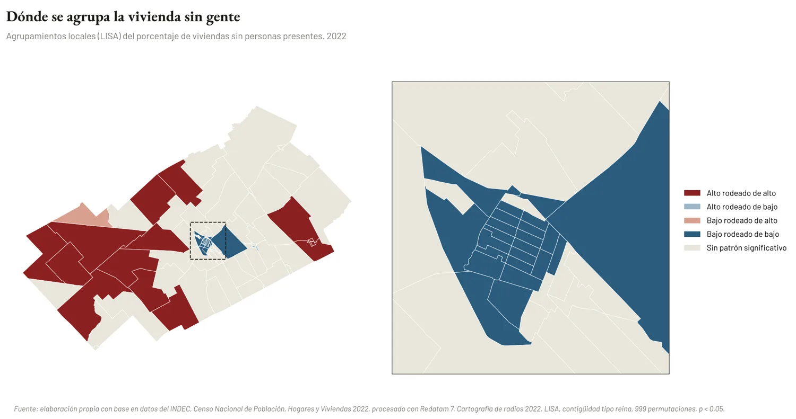
Figura 9. Agrupamientos locales del porcentaje de viviendas sin personas (LISA).
LO QUE ESTO CORRIGE Con los radios de 2010 se había estimado una desocupación de 12,6 % en los radios densos y 28,6 % en el resto, y se advirtió que la comparación con el 15,3 % de 2022 no permitía saber si la vivienda vacía había crecido o disminuido. Los datos de 2022 por radio confirman que el fenómeno es de los bordes, no del centro, y agregan lo que faltaba: el motivo. La vivienda vacía de la cabecera es mercado e inversión en curso; la del campo y los pueblos es segunda residencia. |
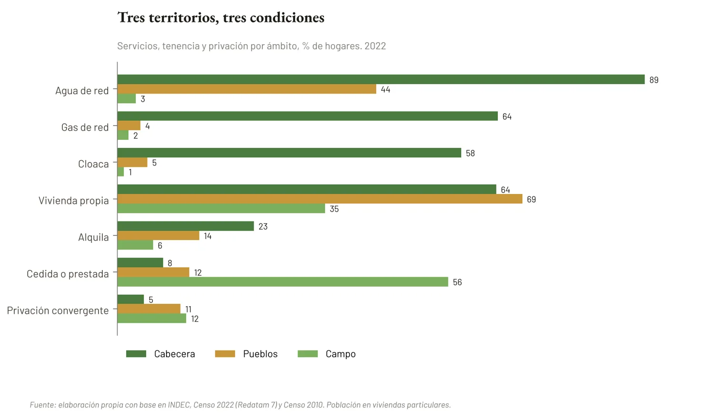
Figura 10. Servicios, tenencia y privación material por ámbito, % de hogares.
Las redes terminan donde termina la cabecera. Allí el 89,4 % de los hogares toma agua de red, el 64,5 % cocina con gas de red y el 58,3 % desagota a cloaca. En los pueblos, el agua de red llega al 43,8 %, pero el gas y la cloaca casi no existen (3,9 % y 5,1 %). Son los dos indicadores con mayor autocorrelación espacial de todo el conjunto (I de Moran de 0,85 para el gas y 0,76 para la cloaca): no hay transiciones, hay bordes de red.
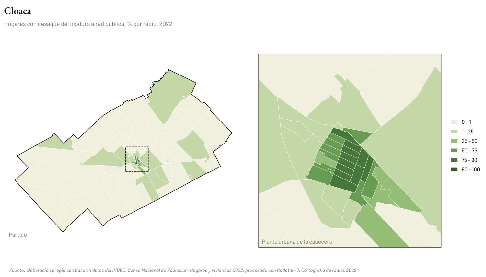
Figura 11. Hogares con desagüe a red pública (cloaca), % por radio.
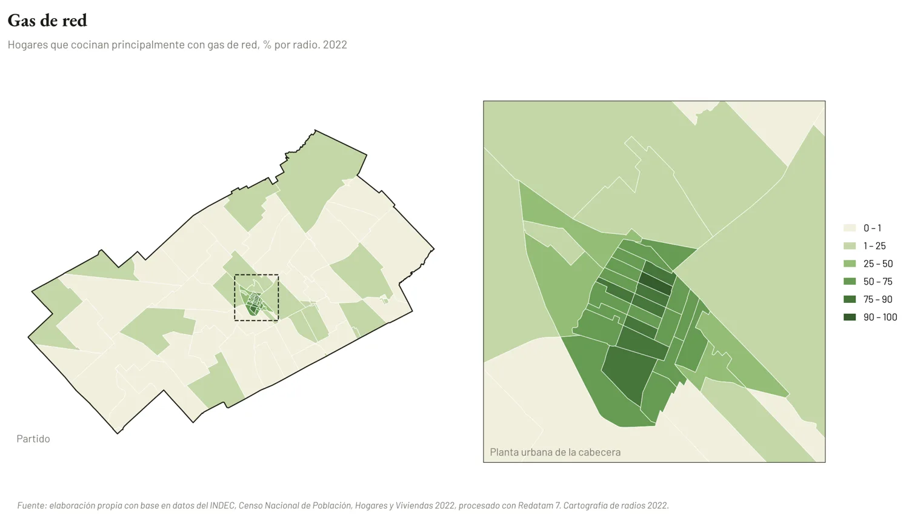
Figura 12. Hogares que cocinan con gas de red, % por radio.
El 23,1 % de los hogares de la cabecera alquila, y en tres radios centrales de alta densidad supera el 31 %. En el campo, en cambio, el 56,1 % de los hogares vive en una vivienda cedida por trabajo o prestada: la casa del puesto, del casero, del encargado. Sólo el 35,2 % es propietario. Es una forma de habitar que no aparece en el promedio del partido y que ata la residencia al empleo.
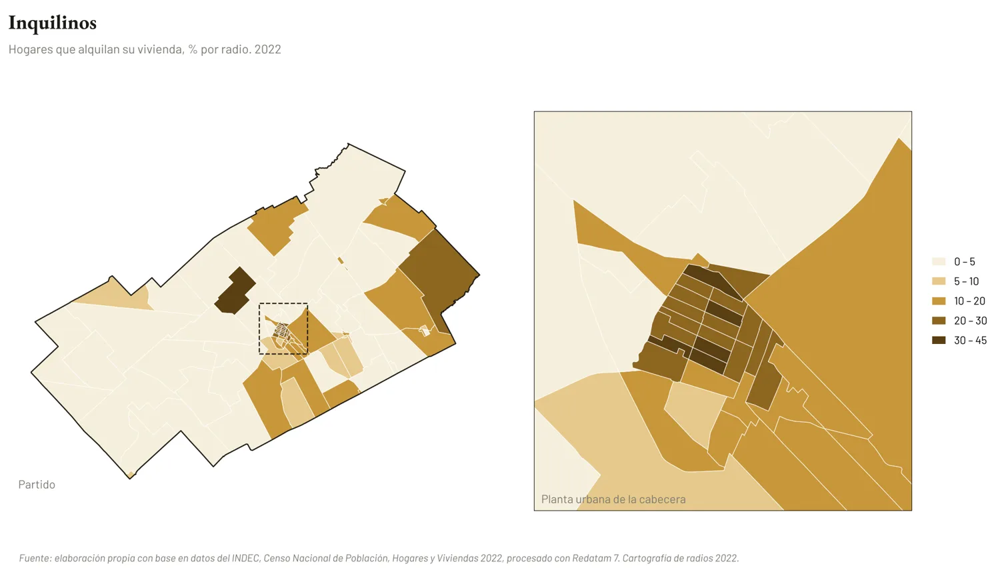
Figura 13. Hogares inquilinos, % por radio.
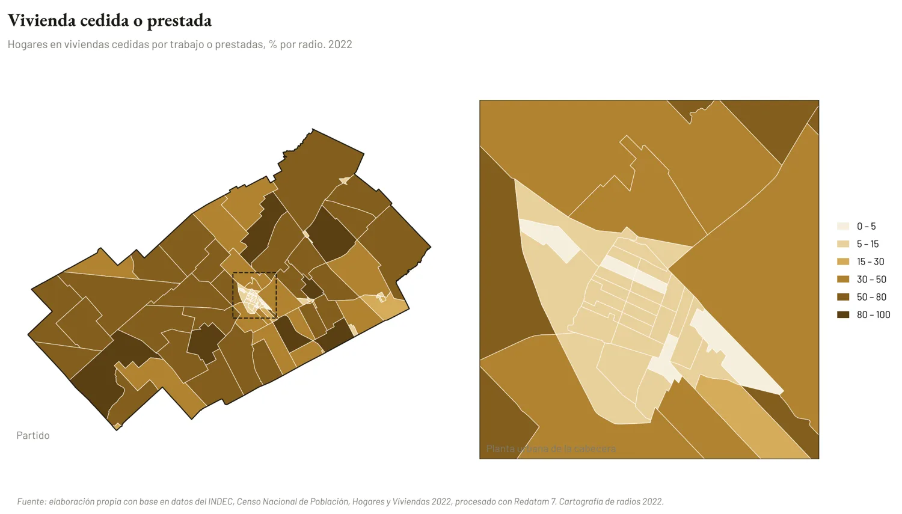
Figura 14. Hogares en vivienda cedida por trabajo o prestada, % por radio.
La privación material convergente (hogares que carecen a la vez de recursos corrientes y patrimoniales) alcanza al 4,5 % de los hogares de la cabecera y a más del 10 % en pueblos y campo. Dentro de la cabecera, los valores más altos están en radios del borde: 067281712 (14,2 % de privación convergente y 18,2 % de hogares con NBI) y 067280904 (13,8 %).
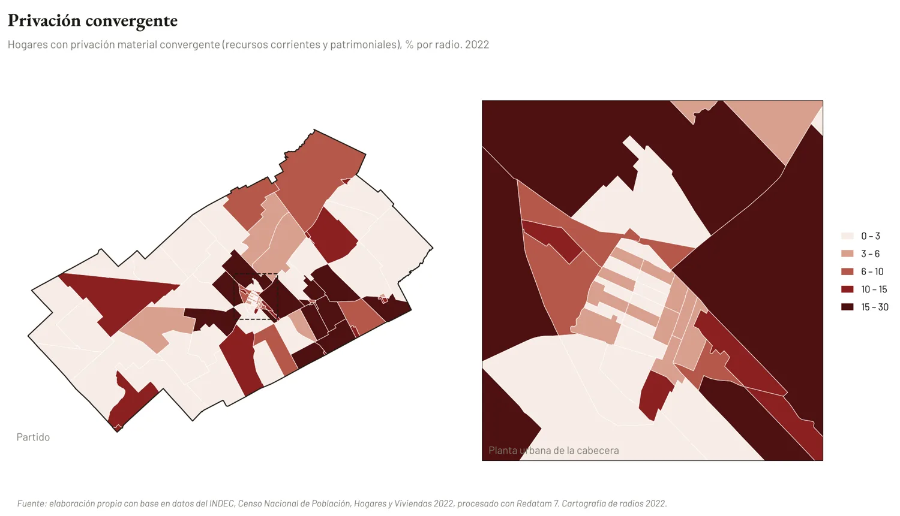
Figura 15. Hogares con privación material convergente, % por radio.
Esos mismos radios son los más jóvenes del partido: tienen 7 personas de 65 años o más por cada 100 menores de 15. En el centro de la cabecera la relación se invierte y supera las 100 (130 en el radio 067281705, 123 en el 067281004). El envejecimiento no muestra autocorrelación espacial significativa a escala del partido (I de Moran = −0,07, p = 0,11), porque en el campo y los pueblos los valores son intermedios y heterogéneos; la oposición es interna a la cabecera: un centro con más mayores, más inquilinos y mejores servicios, y bordes con más niños, más privación y redes incompletas.
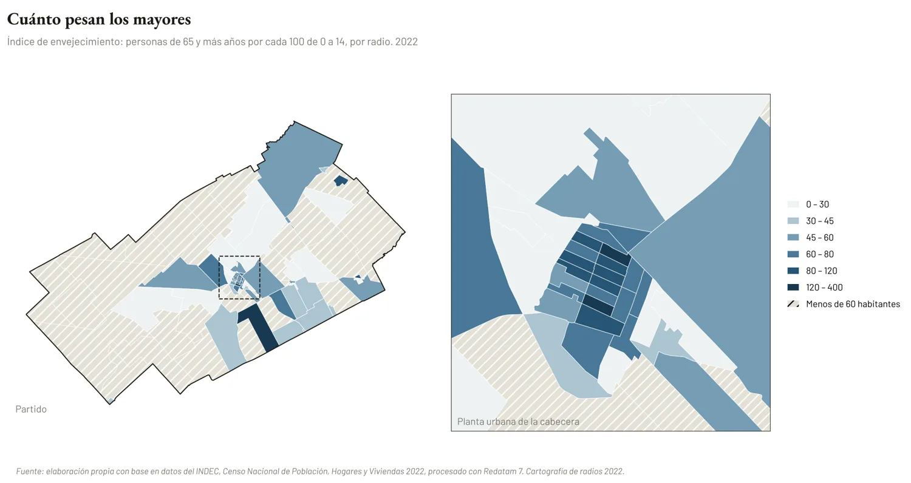
Figura 16. Índice de envejecimiento por radio (radios con 60 habitantes o más).
¿La vivienda de fin de semana es reserva o retirada? Las 558 viviendas de uso temporal de pueblos y campo pueden leerse como un capital residencial disponible para el arraigo o como el síntoma de un territorio que se usa sin habitarse. El Plan necesita saber cuál de las dos cosas está ocurriendo en Villa Ruiz antes de decidir si se densifica o se protege.
¿Cuánto del crecimiento de los pueblos es elección y cuánto expulsión? Si los pueblos ganan peso mientras el centro de la cabecera alquila y envejece, cabe preguntarse si la gente llega a los pueblos atraída por el suelo barato o empujada por el precio del alquiler urbano.
¿Qué significa «propiedad» en el campo? Con más de la mitad de los hogares rurales en vivienda cedida o prestada, una política de vivienda rural pensada desde la propiedad individual dejaría afuera a la mayoría.
¿Dónde termina la ciudad? El borde de las redes de gas y cloaca coincide con el borde de la privación y de la población joven. ¿Es la red la que sigue a la ciudad, o la ciudad la que se extiende más rápido que la red?
¿Cuánto mide lo que medimos? La concentración «aumentó» en parte porque cambió la grilla. Toda comparación entre censos por radio debe preguntarse primero si cambió el territorio o cambió la forma de cortarlo.
Tabla 2. I de Moran global por indicador. 91 radios, contigüidad tipo reina, 999 permutaciones.
| Indicador | I de Moran | z | p |
|---|---|---|---|
| Densidad de población (log) | 0,73 | 11,4 | 0,001 |
| Gas de red (% hogares) | 0,85 | 13,6 | 0,001 |
| Cloaca (% hogares) | 0,76 | 11,9 | 0,001 |
| Vivienda cedida o prestada | 0,57 | 9,0 | 0,001 |
| Inquilinos | 0,52 | 8,4 | 0,001 |
| Viviendas sin personas | 0,46 | 7,3 | 0,001 |
| Viviendas de uso temporal | 0,35 | 5,8 | 0,001 |
| Clima educativo alto o muy alto | 0,35 | 5,7 | 0,001 |
| Privación convergente | 0,33 | 5,4 | 0,001 |
| Residía en otro lugar hace 5 años | 0,21 | 3,6 | 0,002 |
| Ocupados sin aportes | 0,15 | 2,5 | 0,012 |
| Personas por hogar | 0,13 | 2,2 | 0,018 |
| Hogares con NBI | 0,06 | 1,2 | 0,117 |
| Población de 65 y más | -0,03 | -0,3 | 0,380 |
| Índice de envejecimiento | -0,07 | -1,1 | 0,109 |
Fuente: elaboración propia con base en INDEC, Censo Nacional de Población, Hogares y Viviendas 2022, procesado con Redatam 7. Los valores de p iguales a 0,001 son el mínimo posible con 999 permutaciones.
Para citar los datos: «Fuente: elaboración propia con base en datos del INDEC, Censo Nacional de Población, Hogares y Viviendas 2022, procesado con Redatam 7».
Arq. Juan Patricio Addesso – Mat. CAPBA 020811
Director de Planeamiento y Obras Particulares · Municipio de San Andrés de Giles
San Andrés de Giles, octubre de 2026